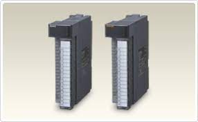

Arquitecturas de cómputo.
Temario
1.1 Modelos de arquitecturas de cómputo.
1.1.1 Clásicas.
1.1.2 Segmentadas.
1.1.3 De multiprocesamiento.
1.2 Análisis de los componentes.
1.2.1 Arquitecturas.
1.2.1.1 Unidad Central de Procesamiento.
1.2.1.2 Unidad Aritmética lógica.
1.2.1.3 Registros.
1.2.1.4 Buses.
1.2.2 Memoria.
1.2.2.1 Conceptos básicos del manejo de la memoria.
1.2.2.2 Memoria principal.
1.2.2.3 Memoria caché.
1.2.3 Manejo de la entrada/salida.
1.2.3.1 Módulos de entrada/salida.
1.2.3.2 Entrada/salida
programada.
1.2.3.3 Entrada/salida mediante interrupciones.
1.2.3.4 Acceso directo a memoria.
1.2.3.5 Canales y procesadores de entrada/salida
1.2.4 Buses.
1.2.4.1 Tipos de buses
1.2.4.2 Estructura de los buses
1.2.4.3
Jerarquías de buses
1.2.5. Interrupciones
1.1 Modelos de arquitectura de computo
1.1.1 Clásicas.
Estas arquitecturas se desarrollaron en las primeras computadoras electromecánicas y
de tubos de vacío. Aun son usadas en procesadores empotrados de gama baja y son la base de
la mayoría de las arquitecturas modernas.
Arquitectura Mauchly-Eckert (Von Newman)
Esta arquitectura fue utilizada en la computadora ENIAC. Consiste en una unidad central de
proceso que se comunica a través de un solo bus con un banco de memoria en donde se almacenan
tanto los códigos de instrucción del programa, como los datos que serán procesados por este.
Esta arquitectura es la más empleada en la actualidad ya, que es muy versátil. Ejemplo de esta versatilidad
es el funcionamiento de los compiladores, los cuales son programas que toman como entrada un archivo de texto
conteniendo código fuente y generan como datos de salida, el código máquina que corresponde a dicho código fuente
(Son programas que crean o modifican otros programas). Estos datos de salida pueden ejecutarse como un programa
posteriormente ya que se usa la misma memoria para datos y para el código del programa.

La principal desventaja de esta arquitectura, es que el bus de datos y direcciones único
se convierte en un cuello de botella por el cual debe pasar toda la información que se lee de o se escribe a la
memoria, obligando a que todos los accesos a esta sean secuenciales. Esto limita el grado de paralelismo
acciones que se pueden realizar al mismo tiempo) y por lo tanto, el desempeño de la computadora. Este efecto
se conoce como el cuello de botella de Von Newman.
Arquitectura Harvard
Esta arquitectura surgió en la universidad del mismo nombre, poco después de que la arquitectura
Von Newman apareciera en la universidad de Princeton. Al igual que en la arquitectura Von Newman, el programa se almacena
como un código numérico en la memoria, pero no en el mismo espacio de memoria ni en el mismo formato que los datos.
Por ejemplo, se pueden almacenar las instrucciones en doce bits en la memoria de programa, mientras los datos de almacenan
en ocho bits en una memoria aparte.

El hecho de tener un bus separado para el programa y otro para los datos permite que se lea el código de operación
de una instrucción, al mismo tiempo se lee de la memoria de datos los operados de la instrucción previa. Así se evita el problema del
cuello de botella de Von Newman y se obtiene un mejor desempeño.
En la actualidad la mayoría de los procesadores modernos se conectan al exterior de manera similar a a la arquitectura Von Newman,
con un banco de memoria masivo único, pero internamente incluyen varios niveles de memoria cache con bancos separados en cache de programa
y cache de datos, buscando un mejor desempeño sin perder la versatilidad.
1.1.2 Segmentadas.span>
Las arquitecturas segmentadas o con segmentación del cauce buscan mejorar el desempeño realizando paralelamente varias etapas del ciclo de instrucción
al mismo tiempo. El procesador se divide en varias unidades funcionales independientes y se dividen entre ellas el procesamiento de las instrucciones.
Para comprender mejor esto, supongamos que un procesador simple tiene un ciclo de instrucción sencillo consistente solamente en una etapa de búsqueda
del código de instrucción y en otra etapa de ejecución de la instrucción. En un procesador sin segmentación del cauce, las dos etapas se realizarían de manera secuencial
para cada una de las instrucciones, como lo muestra la siguiente figura.

 1.1.3 De multiprocesamiento.
1.1.3 De multiprocesamiento.
Cuando se desea incrementar el desempeño más aya de lo que permite la técnica de segmentación del cauce (limite teórico de una instrucción por ciclo de reloj),
se requiere utilizar más de un procesador para la ejecución del programa de aplicación.
Las CPU de multiprocesamiento se clasifican de la siguiente manera (Clasificación de Flynn):
SISO – (Single Instruction, Single Operand) computadoras Monoprocesador
SIMO – (Single Instruction, Multiple Operand) procesadores vectoriales, Exenciones MMX
MISO – (Multiple Instruction, Single Operand) No implementado
MIMO – (Multiple Instruction, Multiple Operand) sistemas SMP, Clusters, GPUs

1.2 Análisis de los componentes.
1.2.1 Arquitecturas.
Además de las Arquitecturas clásicas mencionadas anteriormente, en la actualidad han aparecido Arquitecturas híbridas entre la Von Newman y la Harvard, buscando conservar la flexibilidad, pero mejorando el rendimiento.
Esta escuela pretende aplicar un enfoque totalmente distinto al tradicional hasta entonces, que pasó a conocerse como computadoras de conjunto complejo de instrucciones (CISC) para diferenciarla de la nueva tendencia.
Se implementan instrucciones especiales que realizan funciones complejas, de manera que un programador puede encontrar con seguridad, una instrucción especial que realiza en hardware la función que el necesita.
CISC vs RISC
1.2.1.1 Unidad Central de Procesamiento.
La unidad central de procesamiento (conocida por las siglas CPU, del inglés Central Processing Unit) es el hardware dentro de una computadora u otros dispositivos programables.
Su trabajo es interpretar las instrucciones de un programa informático mediante la realización de las operaciones básicas aritméticas, lógicas y externas (provenientes de la unidad de entrada/salida). Su diseño y avance ha variado notablemente desde su creación, aumentando su eficiencia y potencia, y reduciendo aspectos como el consumo de energía y el costo.
Una computadora puede contener más de una CPU (multiprocesamiento). En la actualidad, los microprocesadores están constituidos por un único circuito integrado (chip) aunque existen los procesadores multinúcleo (varias CPU en un solo circuito integrado). Un circuito integrado que contiene una CPU también puede contener los dispositivos periféricos, y otros componentes de un sistema informático; similar a un microcontrolador (menos potente en RAM) se le denomina sistema en un chip (SoC).
1.2.1.2 Unidad Aritmética lógica.
Es la parte encargada de procesar los datos, se conoce también como ALU (Arithmetic-Logic Unit). Las operaciones que
realiza son de tipo aritmético: suma, resta, multiplicación y división; y de tipo lógico:igual, mayor que o menor que
1.2.1.3 Registros.
Es la parte encargada de procesar los datos, se conoce también como ALU (Arithmetic-Logic Unit). Las operaciones que
realiza son de tipo aritmético: suma, resta, multiplicación y división; y de tipo lógico:igual, mayor que o menor queLos registros que encuentran dentro de cada procesador su
función principales almacenar los valores de cada uno de los
datos,comandos,instrucciones o estados binarios que son los
que ordenan qué dato debe procesarse, así como la forma en
la que se debe realizar.
Un registro no deja de ser una memoria de velocidad alta y
con poca capacidad.
Cada registro puede contener una instrucción, una dirección
de almacenamiento o cualquier tipo de dato.
En un procesador encontramos espacios con una capacidad
que oscila entre 4 y 64 bits porque cada registro debe tener
un tamaño suficiente para contener una instrucción.
En el caso de que un ordenador de 64 bit, cada registro de
tener un tamaño de 64 bits.
1.2.1.4 Buses.
Existen dos tipos primordiales de buses (conexiones) para el
envío de la información: bus paralelo o serial.
Hay diferencias en el desempeño y hasta hace unos años se
consideraba que el uso apropiado dependía de la longitud
física de la conexión: para cortas distancias el bus paralelo,
para largas el serial.
Bus paralelo: Es un bus en el cual los datos son enviados por
bytes al mismo tiempo, con la ayuda de varias líneas que
tienen funciones fijas. La cantidad de datos enviada es
bastante grande con una frecuencia moderada y es igual al
ancho de los datos por la frecuencia de funcionamiento. En
los computadores ha sido usado de manera intensiva, desde
el bus del procesador, los buses de discos duros, tarjetas de
expansión y de vídeo hasta las impresoras.
Bus serie: En este los datos son enviados, bit a bit y se
reconstruyen por medio de registros o rutinas de software.
Está formado por pocos conductores y su ancho de banda
depende de la frecuencia. Es usado desde hace menos de 10
años en buses para discos duros, tarjetas de expansión y para
el bus del procesador.
1.2.2 Memoria.
1.2.2.1 Conceptos básicos del manejo de la memoria.
Se produce bajo el control directo y continuo del programa que solicita la operación de E/S. tanto en la entrada y salida programada
como con interrupciones, el procesador es responsable de extraer los datos de la memoria en una salida, y almacenar los datos en la memoria
principal. El problema con la E/S es que el procesador tiene que esperar un tiempo considerable hasta que el modulo en cuestión esté preparado
para recibir o transmitir dato.
1.2.2.2 Memoria principal.
La memoria de semiconductor usa circuitos integrados basados en semiconductores para almacenar información. Un chip de memoria
de semiconductor puede contener millones de minúsculos transistores o condensadores. Existen memorias de semiconductor de ambos tipos: volátiles y no
volátiles. En las computadoras modernas, la memoria principal consiste casi exclusivamente en memoria de semiconductor volátil y dinámica, también conocida
como memoria dinámica de acceso aleatorio o más comúnmente RAM, su acrónimo inglés. Con el cambio de siglo, ha habido un crecimiento constante en el uso de un nuevo tipo de memoria de semiconductor no volátil llamado memoria flash. Dicho crecimiento se ha dado, principalmente en el campo de las memorias fuera de línea en computadoras domésticas. Las memorias de semiconductor no volátiles se están usando también como memorias secundarias en varios dispositivos de electrónica avanzada y computadoras especializadas y no especializadas.
1.2.2.3 Memoria caché.
En informática, la caché es la memoria de acceso rápido de una computadora, que guarda temporalmente las últimas informaciones procesadas.
La memoria caché es un búfer especial de memoria que poseen las computadoras, que funciona de manera similar a la memoria principal, pero es de menor tamaño y de acceso más rápido. Es usada por el microprocesador para reducir el tiempo de acceso a datos ubicados en la memoria principal que se utilizan con más frecuencia.
La caché es una memoria que se sitúa entre la unidad central de procesamiento (CPU) y la memoria de acceso aleatorio (RAM) para acelerar el intercambio de datos.
Cuando se accede por primera vez a un dato, se hace una copia en la caché; los accesos siguientes se realizan a dicha copia, haciendo que sea menor el tiempo de acceso medio al dato. Cuando el microprocesador necesita leer o escribir en una ubicación en memoria principal, primero verifica si una copia de los datos está en la caché; si es así, el microprocesador de inmediato lee o escribe en la memoria caché, que es mucho más rápido que de la lectura o la escritura a la memoria principal.
1.2.3 Manejo de la entrada/salida.
1.2.3.1 Módulos de entrada/salida.
Los módulos de entrada y salida están conectados con el procesador y la memoria principal, y cada uno controla uno o más dispositivos externos.
La arquitectura de E/S es su interfaz con el exterior, esta arquitectura se diseña de manera que permita una forma sistemática de controlar las
interacciones con el mundo exterior y proporcione al sistema operativo la información que necesita para gestionar la actividad de E/S.

1.2.3.2 Entrada/salida programada.
Se produce bajo el control directo y continuo del programa que solicita la operación de E/S. tanto en la entrada y salida
programada como con interrupciones, el procesador es responsable de extraer los datos de la memoria en una salida, y almacenar los datos en la
memoria principal. El problema con la E/S es que el procesador tiene que esperar un tiempo considerable hasta que el modulo en cuestión esté
preparado para recibir o transmitir datos
1.2.3.3 Entrada/salida mediante interrupciones.
El programa genera una orden de E/S y después continúa ejecutándose hasta que el hardware lo interrumpe para indicar que la
}operación ha concluido. La entrada y salida con interrupciones, aunque es más eficiente que la sencilla, también requiere la intervención activa
del procesador para transferir los datos entre la memoria y el módulo de E/S.
1.2.3.4 Acceso directo a memoria.
Un procesador de E/S específico toma el control de la operación para transferir un bloque de datos.
El módulo DMA(Acceso Directo a Memoria) es capaz de imitar al procesador y, de hecho, es capaz de transferir datos desde
memoria a través del bus del sistema. El módulo DMA debe utilizar el bus solo cuando el procesador no lo necesita, o debe
forzar al procesador a que suspenda temporalmente su funcionamiento. Un módulo de E/S no es únicamente un conector mecánico
que permite enchufar el dispositivo al bus del sistema, sino que además, está dotado de inteligencia, es decir, contiene la lógica
necesaria para permitir la comunicación entre el periférico y el bus.
1.2.3.5 Canales y procesadores de entrada/salida
El canal de entrada y salida representa una ampliación del concepto de DMA. Un canal de entrada y salida puede ejecutar
instrucciones de entrada y salida, lo que le confiere un control completo sobre las operaciones de entrada y salida. Un canal selector controla
varios dispositivos de velocidad elevada y en un instante dado, se dedica a transferir datos a uno de esos dispositivos, es decir el canal de
entrada y salida selecciona un dispositivo y efectúa la transferencia de datos. Cada dispositivo o pequeño grupo de dispositivos es manejado por
un controlador o módulo de E/S, así el canal de entrada y salida se utiliza en lugar de la CPU para controlar estos controladores de E/S. Un canal
multiplexor puede manejar la entrada y salida de varios dispositivos al mismo tiempo. Para dispositivos de velocidad reducida, un multiplexor de
byte acepta o transmite caracteres tan rápido como es posible a varios dispositivos.

1.2.4 Buses
1.2.4.1 Tipos de buses
SERIE y PARALELO: los primeros transmiten bit a bit y los segundos varios bits a la vez.
• MULTIPLEXADOS y NO MULTIPLEXADOS o DEDICADOS: los multiplexados realizan diferentes funciones en función de las necesidades del momento.
• Ejemplo: bus compartido para direcciones y datos ahorro en Hardware y por lo tanto en costos. Tipos de Buses
• CENTRALIZADOS y DISTRIBUIDOS: necesidad de determinar qué elemento transmite y cuál recibe. Generalmente existe administración centralizada por la CPU o procesador.
• SÍNCRONOS y ASÍNCRONOS (temporización): cómo ocurren los diferentes eventos (comienzo, fin,...) implicados en la transmisión de información. Utilización de una señal de reloj
(comunicación síncrona) o unas líneas de protocolo (comunicación asíncrona).
1.2.4.2 Estructura de los buses
Los buses se componen de líneas eléctricas que transmiten un “0” (cero voltios) o un “1” (más de cero voltios).
• Líneas/bus de datos: camino para transferir datos entre el resto de componentes de un computador.
Su anchura (número de líneas eléctricas) suele ser una potencia de dos (8=23, 16=24, 32=25, 64=26,...).Estructura de los Buses
• Líneas/bus de direcciones: designan la posición/dirección de los datos. Son salidas de la CPU/procesador y determinan capacidad de direccionamiento.
• Líneas/bus de control: controlan el acceso y uso de las líneas/buses anteriores.
1.2.4.3 Jerarquías de buses
Compatibilidad entre buses:
• Sólo si son eléctricamente idénticos. Las características de los diferentes tipos de buses deben estar normalizadas. Ejemplo: bus PCI, AGP, USB, FireWire...Jerarquías de Buses
• Antiguamente sólo existía un bus principal que lo conectaba todo: bus del sistema.
• Actualmente existe un conjunto de buses conectados entre sí y formando una jerarquía.
• Facilita la mejora del rendimiento de todo el computador al agrupar dentro de los diferentes tipos de buses aquellos componentes del ordenador que tienen aproximadamente la misma velocidad de transmisión de la información.
• Mientras más lejos del CPU, buses más lentos y normalmente de menos líneas de datos. Jerarquías de Buses
• Varios tipos de buses en función de su posición dentro de la jerarquía:
• Bus de CPU o “bus local” del procesador: elementos más rápidos tales como la memoria caché.
• Bus local ó bus del Sistema (Front Side Bus): conecta elementos tales como la memoria principal o dispositivos rápidos (por ejemplo AGP).
• Bus de expansión y/o E/S: PCI, USB, ATA, SCSI.
 1.2.5. Interrupciones
1.2.5. Interrupciones
Hay tres tipos de interrupciones: Reset del sistema, no enmascarables (NMI) y enmascarables.
Las enmascarables puedes ser habilitadas o deshabilitadas individualmente o mediante el flag e habilitación general (GIE). Son generadas por periféricos con capacidad de interrumpir.
En cambio las no enmascarables sólo puedes ser habilitadas o deshabilitadas individualmente (NMIIE, ACCVIE, OFIE). El flag de habilitación general no les afecta.
Cuando una NMI es aceptada, todos los bits de NMI son automáticamente reseteados. La ejecución del programa empieza en la dirección almacenada en el vector de NMI, 0FFFCh.
Una NMI puede ser generada por tres fuentes: Un flanco en el pin RST/NMI cuando está configurado en modo NMI; un fallo en el oscilador o condiciones de error con el cristal oscilador; violación acceso a la memoria flash, cuando se quiere leer o borrar la flash desde la memoria RAM mientras BUSY=1, escritura del registro de control 1 (FCTL1) mientras WAIT=0 o escritura registro de control 2 (FTL2) mientras BUSY=1.
Cuando una interrupción es requerida por un periférico, está habilitada la interrupción y el bit GIE=1, se salta a la rutina de servicio a la interrupción. En el caso de NMI sólo hace falta que esté a 1 el bit de habilitación individual.
Aceptación de una Interrupción el tiempo de aceptación de una interrupción son seis ciclos de reloj, contando desde la aceptación de la petición de interrupción hasta el inicio de la primera instrucción de larutina de servicio a la interrupción.